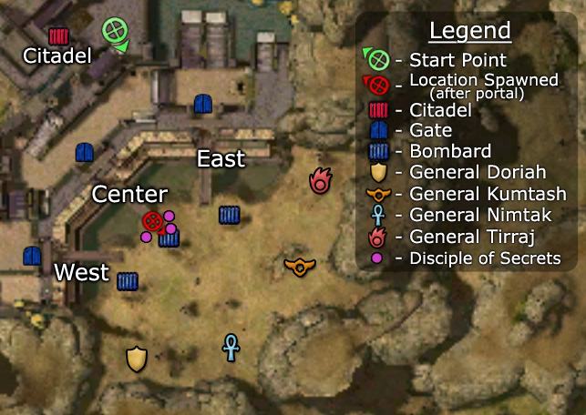

Elite: Magehunter's Smash
M10b
Dzagonur Bastion
◉ Mission Map

Click to enlarge · Local cache · Wiki
Summary (click to expand)
Support the Vabbian force led by Prince Ahmtur the Mighty to stand against the invading Kournan military and Margonite army at Dzagonur Bastion stronghold.
Region: Vabbi · Mission: 10b of 20 · Type: Cooperative
Required hero: Master of Whispers
Path: Master of Whispers path
✓ Objectives
Defeat the Margonite generals before their forces take the Citadel. Preserve the perimeter bombards to aid you in the battle. Defend the gates to prevent enemy forces from reaching the Citadel.
- Speak to Prince Ahmtur the Mighty.
- [3...0] of 3 gates still stand.
- [3...0] of 3 bombards still function.
- [4...0] of 4 generals remain.
- *Bonus* Keep the bastion's defenses intact.
- [6...0] of 6 defenses left intact.
→ Walkthrough
The aim of this mission is to make sure that the citadel is not captured. You aren't alone in this task; you have several groups of Vabbi defenders to help you out and siege support from the citadel. You start out in the citadel and use a teleporter to exit the stronghold and begin the mission.
In front of the citadel there are 3 groups of Vabbi defenders. The Disciple of Secrets which leads each group can be given instructions on where they should be defending. It is recommended that you send 2 groups to defend one side, and defend the middle with the last group.
Initially a few groups of Kournan soldiers will come towards the citadel. Focus your defense on the center with the Vabbi defenders, but you may need to travel widely to help control the Kournans. In a team with 2 or more human players, split into two teams of 4 for mobility and better defense. If you are alone it is best to stay with your team and defend the middle and the side without Vabbi defenders - Master of Whispers as a minion master is a good choice. 2 groups of Vabbi defenders will have trouble defending a side without some assistance.
After several waves of Kournan groups, four Margonite bosses (the Generals) will spawn at the far edge of the area in front of the citadel. The Chaos rifts which they control will continue to spawn groups of Kournan soldiers accompanied by a single Margonite demon as long as the boss is alive. The bosses must be killed to reduce the defensive workload for the team and complete the mission. The Generals will only come down towards the fort when each defense is broken - so the elementalist boss will come down to the East Bombard when the East Bombard is destroyed by the Kournan forces and will move onto the gate and beyond when the Kournan forces have destroyed the East Gate. The generals in order from west to east are;  General Doriah,
General Doriah,  General Nimtak,
General Nimtak,  General Kumtash,
General Kumtash,  General Tirraj.
General Tirraj.
Go to the side which does not have the Vabbi defenders. Kill any group of Kournans which emerge after the boss spawn and then push up to take out the boss. Fall back if need be to defend the middle, but each time you attack try to kill the boss or at least one of the Margonites in the boss' group. When that boss is killed get on top of the defensive situation on the other side and middle then work on the next boss along from the one you just killed. When the second boss is killed the worst is over and it should now be easy for you to get the situation under control as the attackers and defenders are focused in the same spot. Take out the remaining two bosses to finish the mission.
Remember that the mission becomes easier the more generals you kill as they will no longer summon more troops, so be assertive even if it means you suffer a few losses. If you send the Vabbians to the east gate (you should) then you can work from west to east, i.e. starting with General Doriah (the warrior). This will mean you have less running to do, and by the time you get to General Tirraj you should have a sizeable Vabbian force left to help you out (and absorb some of Tirraj's ridiculous spike damage). Go in for the kill - take out the priest (if there is one) and then the general - massive spike damage is your best friend, so a high-damage assassin build, air elementalist (or AoE fire elementalist if you've got snares) and mesmers are effective. When you go in for the kill, commit to it. Make sure you've got the energy reserves to get it, then you can retreat to regenerate before finishing off the group.
You lose this mission (and bonus) by getting worn down. The Kournans and Margonites are fighting a war of attrition against you - you have very little time to recuperate between battles as you constantly need to be fighting somewhere else. That means your team needs to be relatively self-sufficient - bring a self-heal and something to help you regenerate energy quickly. The longer the mission goes on, the harder it will get as death penalty starts to rack up and you have no reserves left you will find it harder to eliminate groups quick enough and you'll find yourself overwhelmed. Consequently, end it as soon as possible - be ready to eliminate at least one general the moment they spawn. While this is a tough mission, well-equipped teams shouldn't have too much trouble.
★ Bonus
For the Master's reward on this mission only 5 of the 6 defensive structures need to remain.
If you are attempting the bonus with heroes and henchmen, it may take a few attempts to be successful. Assign all the Vabbi defenders to either the western or eastern bombard, and use your party to defend the remaining two. It may also be easier to let one of the bombards fall after the bosses spawn, since this will prompt the boss at that bombard to move towards the center; you can then engage him without having to move too far away from the other bombards. However, if any other defensive structures are lost you'll have to restart the mission for the bonus. You should also keep an eye on the status of the Vabbians; while they can usually hold their own against the Kournans, you may have to come to their aid.
Tactically, the Eastern Bombard is easier for the Vabbian defenders to hold because the difference in elevation between the attacking position and the Vabbian defenders is less significant, so the Kournan archers receive a smaller height advantage against the defenders. Furthermore, General Doriah is typically easier for smaller parties to defeat due to his lack of area of effect damage and generally weaker healing ability. Defeating him early in the battle will make it much easier for you to manage against the other generals, because the Western Bombard is much farther from the other two bombards.
◆ Hard Mode
No dedicated Hard Mode section on the wiki — expect tougher foes and adjusted mechanics. See walkthrough notes.
☠ Bosses & Elites
✦ Tips & Notes
Skill recommendations
- It helps to bring a minion master (especially Master of Whispers) and/or a spirit spammer to provide additional allies to hold the enemies' attention.
- Party-wide speed boosts, such as "Fall Back!", to move between bombards more quickly.
- Shutdowns to prevent General Tirraj from dealing heavy damage, including interrupts and daze (along with martial players/heroes). Alternatively, damage mitigation skills, e.g. Shelter or Ward Against Elements.
Notes
- Along with The Eternal Grove, this is one of the hardest missions to complete with only heroes and henchmen, due to having to defend multiple points against large numbers of foes.
- You can force the generals to come forward as soon as they spawn by allowing one or more of the bombards to fall early on. The two central generals will come forward if the middle bombard is taken; the others will move closer if the bombard nearest to them falls.
- If the generals are killed near where they spawned, their summoned groups usually will not move towards the bombards after their deaths. This allows you to specifically aim to kill only the general, before disengaging and running off to kill the next general.
- Cartographers can choose to ignore all the foes and make a run for the portal in the south, normally leading to Resplendent Makuun. Because it's a mission, you'll just run through the portal and encounter an end-of-the-world glitch. This makes for an extra, non-required 0.1% - 0.2%.
- If Prince Ahmtur dies, the mission fails.
- After completing this mission, your party will appear in the Kodash Bazaar.
- Completion of this mission will fill in page #8 in the Night Falls storybook.